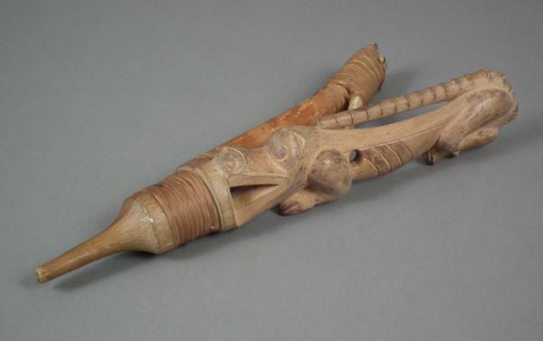
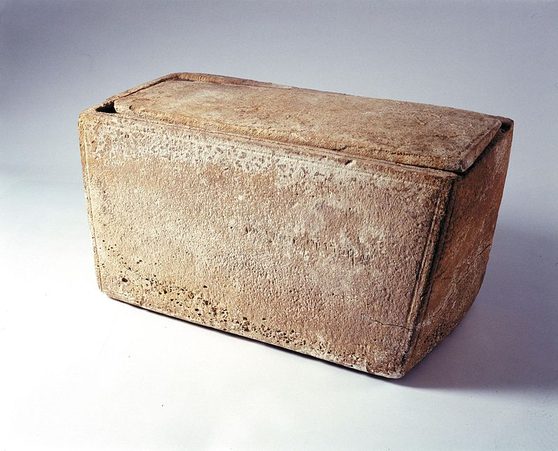
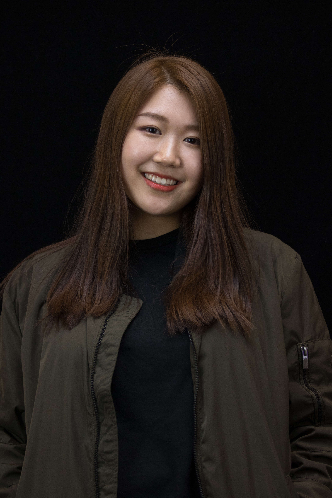

Confronting Controversy: Case Studies from the Museum World
Project Topics
Project Pictures
About Us
Gallery
Project Topics
De-accessioning
Native American Graves Protection & Repatriation Act
Fakes and Forgeries
Grave Goods
Censorship/Nudity
Human Remains
Self Representation vs Representation of the "Other"
Repatriation
Security of Collections
Project Pictures
Column
Sacred Tlingit Halibut
Ossuary Box
Euphronios Krater
The Holy Virgin Mary as a Black Madonna
Mummy
Exhibit by Kara Walker
Parthenon Marbles
Isabella Stewart Gardner Museum
About Us
At Wheaton College, all seniors complete a capstone for their major(s). Depending on the department or program, students may complete an independent research project or thesis or take a senior seminar in their major. The Art History Senior Seminar, ARTH 401, is normally taught each spring; and responsibility for leading the course – and choosing its particular theme or focus – rotates among Art History faculty. For example, in Spring 2015, Professor Ellen McBreen’s students created a website defining 41 key Art History terms; and the following year, Professor Tripp Evans and his students catalogued the art collection at the Providence Athenaeum.
In Spring 2017, the course was taught by Leah Niederstadt, Assistant Professor of Museum Studies & Curator of the Permanent Collection, with a focus on museum controversies. Students explored controversies ranging from the repatriation of objects (or lack thereof) to the Body Worlds phenomenon, from censorship to forgeries, and from “failed” exhibitions to deaccessioning. They considered why such controversies arise, how they develop over time, and what we can learn from them, particularly regarding the economic, political and social roles museum play and the ways in which different constituencies engage with museums and museum-like institutions. Four students took the course to fulfill their Senior Seminar requirement while another five enrolled in it as a 300-level Art History course. Together, the nine students represent five majors and aspire to careers in the museum and gallery world as well as in education, government, and the non-profit sector.
For their final project, the students were each asked to choose a museum controversy and to research at least two relevant case studies. Their choices included censorship, de-accessioning, security, and repatriation among others. They collaborated with three students enrolled in Professor Mark LeBlanc’s Computer Science Senior Seminar (CS 401) to develop a website as a means of sharing their research. This collaborative project thus fulfilled the capstone requirements for both majors. Using images, text, and an interactive component, each student presents both sides of their chosen controversy, challenging website visitors to reconsider their assumptions and view classic museum controversies from more than one perspective.
Abby Landers
Allison Meyette
Anna Craig
ggggggg
Audrey Spina
Fai Pokachaiyapat
Jialei Feng
Lucy Frey
Margaret Liu

Quinn Redmond
Meet The Developers of this Site